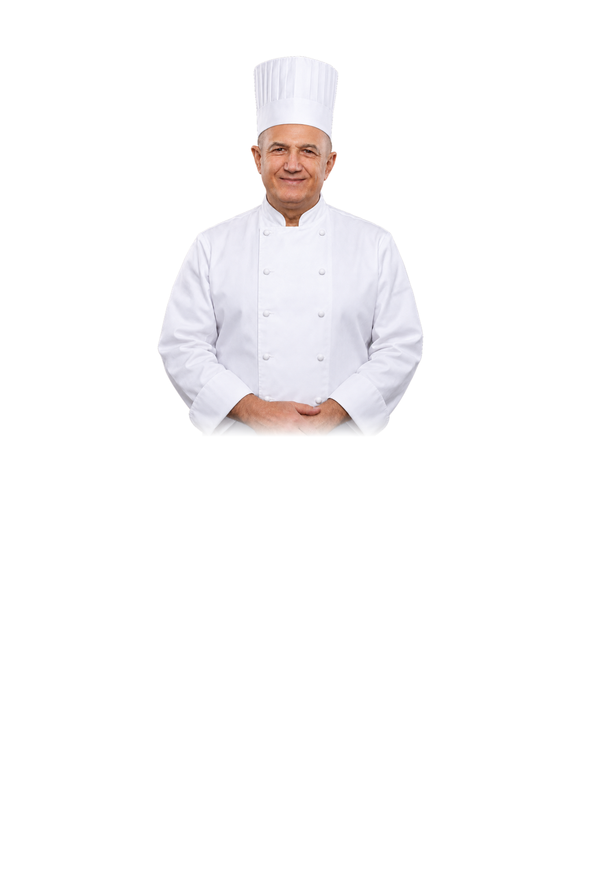
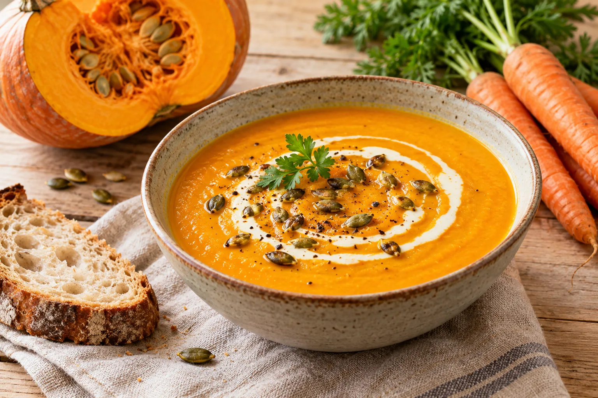
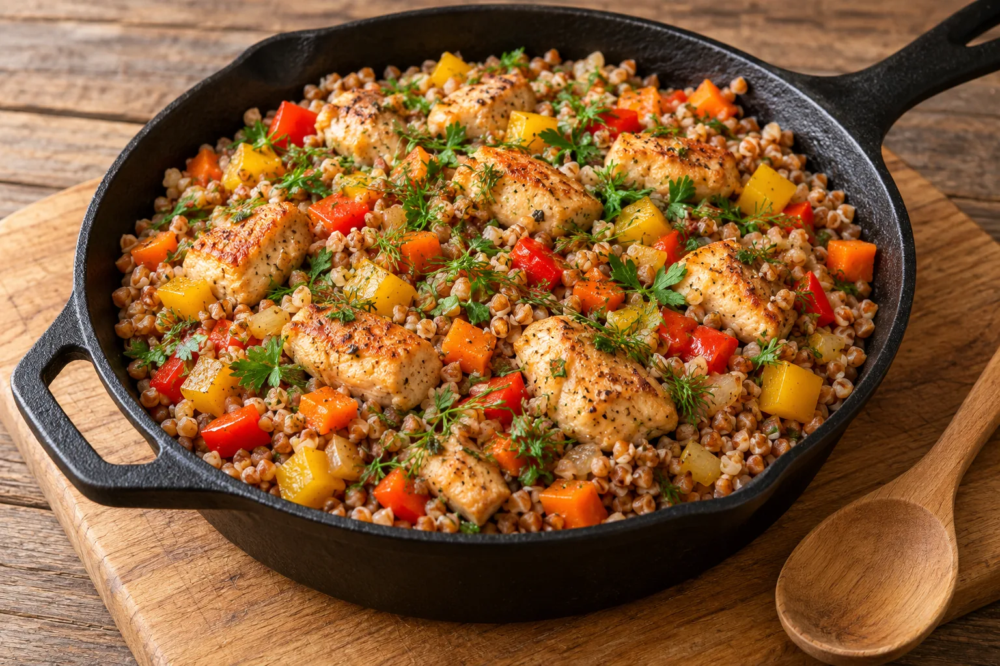
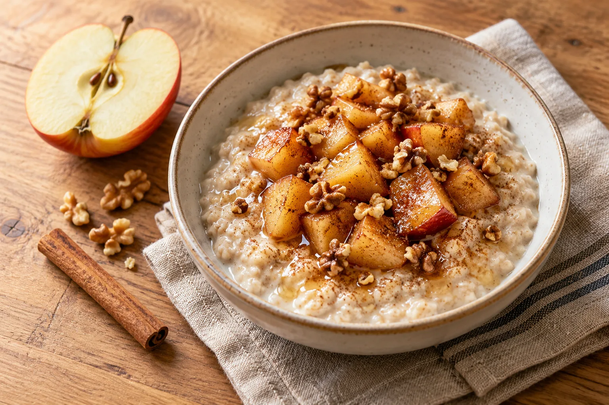
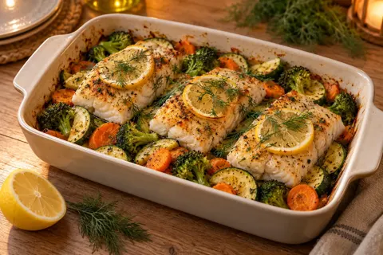
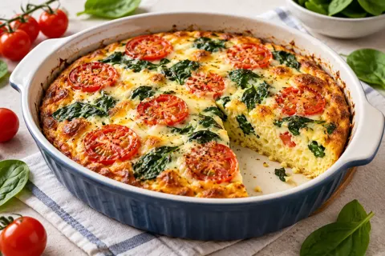

Домашние рецепты на каждый день




Выберите блюдо, укажите число порций и получите список продуктов и калории на порцию
Все рецепты
Начните вводить название или продукт, например «тыква» или «курица», и список сразу сузится
Ничего не нашлось. Попробуйте другой продукт или снимите фильтр.
Ужин · 35 минут · 257 ккал на порцию


Как это работает
Граммы указаны на одну порцию, а сайт умножает их на число людей за столом
Кнопками «минус» и «плюс», от 1 до 12
Граммы всех продуктов уже пересчитаны на ваше число порций
На одну порцию и на всё блюдо
Коротко, с временем и температурой
Калории, белки, жиры и углеводы посчитаны по составу рецепта, по средним табличным значениям продуктов на 100 граммов. У разных марок продуктов цифры немного отличаются.